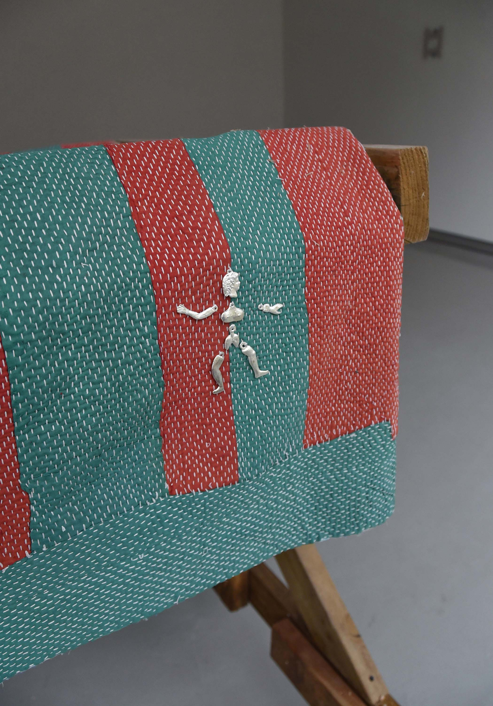
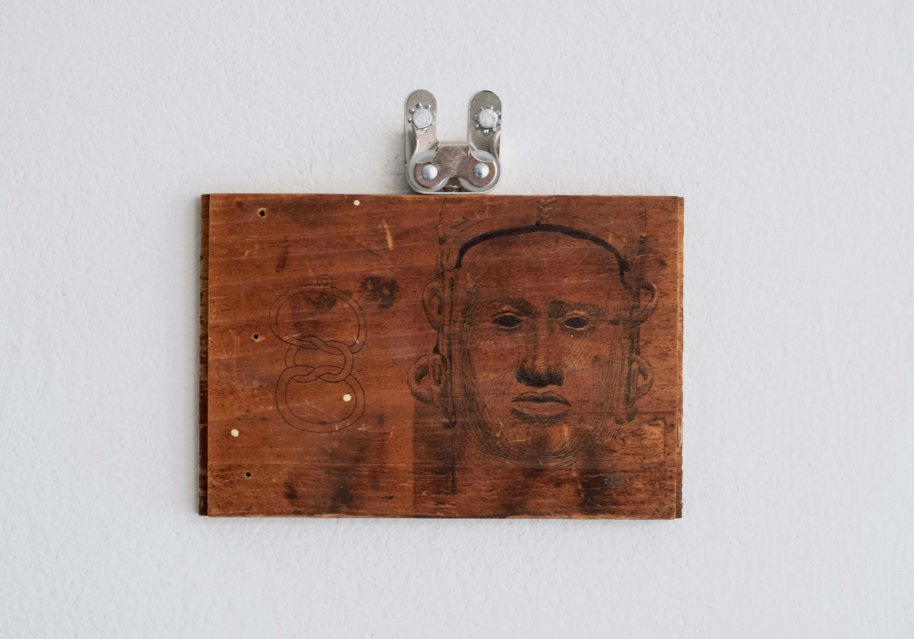
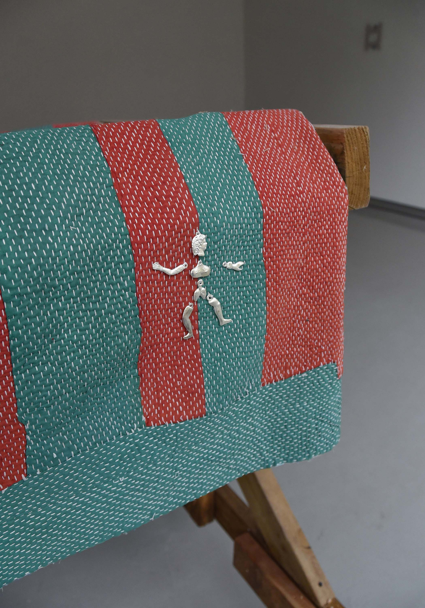
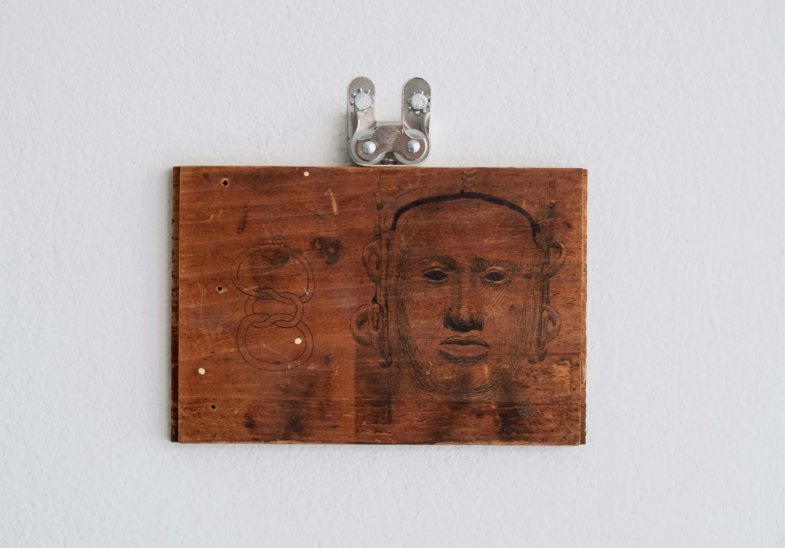

Divine Theory Miguel Mathias, and Jerome Sicard May - Sept, 2022 Austin Arts Center, Trinity College Hartford, CT In America today “right” and “left” are ordinarily used to refer to Republicans and Democrats, two parties that basically represent different factions within the 1 percent—or perhaps, if one were to be extremely generous, the top 2 to 3 percent of the U.S population. Wall Street, which owns both, seems equally divided between the two. Republicans, otherwise, represent the bulk of the remaining CEOs, particularly in the military or extractive industries (energy, mining, timber), and just about all the middle-rank businessmen; Democrats represent the upper echelons of what author and activist Barbara Ehrenreich once called “the professional-managerial class,” the wealthiest lawyers, doctors, administrators, as well as pretty much everyone in academia and the entertainment industry. Certainly this is where each party’s money is coming from—and increasingly, raising and spending money is all these parties really do. What is fascinating is that, during the last thirty years of financialization of capitalism, each of these core constituencies has developed its own theory of why the use of money and power to create reality is inherently unobjectionable, since, ultimately, money and power are the only things that really exist. Consider this notorious quote from a Bush administration aide, made to a New York Times reporter shortly after the invasion of Iraq:
The aide said that guys like me were “in what we call the reality-based community,” which he defined as people who “believe that solutions emerge from your judicious study of discernible reality.” ... “That’s not the way the world really works anymore,” he continued. “We’re an empire now, and when we act, we create our own reality.”1
Such remarks might seem sheer bravado, and the specific remark refers more to military force than economic power—but in fact, for people at the top, when speaking off record, just as words like “empire” are no longer taboo, it’s simply assumed that U.S. economic and military power are basically identical. Indeed, as the reporter goes on to explain, there’s an elaborate theology behind this kind of language. Since the 1980s, those on the Christian right—who formed the core of George W. Bush’s inner circle—turned what was then called “supply-side economics” into a literally religious principle. The greatest avatar of this line of thought was probably conservative strategist George Gilder, who argued that the policy of the Federal Reserve creating money and transferring it directly to entrepreneurs to realize their creative visions was, in fact, merely a human-scale reenactment of God’s original creation of the world out of nothing, by the power of His own thought. This view came to be widely embraced by televangelists like Pat Robertson, who referred to supply-side economics as “the first truly divine theory of money creation.” Gilder took it further, arguing that contemporary information technology was allowing us to overcome our old materialistic prejudices and understand that money, like power, is really a matter of faith—faith in the creative power of our principles and ideas.2 Others, like the anonymous Bush aide, extend the principle of faith in the decisive application of military force. Both recognize an intimate link between the two (as do the heretics of the right, Ayn Rand’s materialist acolytes and Ron Paul-style libertarians, who object to both the current system of money creation and its links to military power). The church of the liberals is the university, where philosophers and “radical” social theorists take the place of theologians. This might appear a very different world, but during the same period, the vision of politics that took shape among the academic left is in many ways disturbingly similar. One need only reflect on the astounding rise in the 1980s, and apparent permanent patron saint status since, of the French poststructuralist Michel Foucault, and particularly his argument that forms of institutional knowledge—whether medicine, psychology, administrative or political science, criminology, biochemistry for that matter—are always also forms of power that ultimately create the realities they claim to describe. This is almost exactly the same thing as Gilder’s theological supply-side beliefs, except taken from the perspective of the professional and managerial classes that make up the core of the liberal elite. During the heyday of the bubble economy of the 1990s, an endless stream of new radical theoretical approaches emerged in academia—performance theory, Actor-Network Theory, theories of immaterial labor—all converging around the theme that reality itself is whatever can be brought into being by convincing other that it’s there.3 Granted, one’s average entertainment executive might not be intimately familiar with the work of Michel Foucault—most have probably barely heard of him, unless they were literature majors in college—but neither is the average churchgoing oil executive likely to be familiar with the details of Gilder’s theories of money creation. These are both, as I remarked, the ultimate theological apotheoses of habits of thought that are pervasive within what we called “the 1 percent,” an intellectual world where even as words like “bribery” or “empire” are banished from public discourse, they are assumed at the same time to be the ultimate basis of everything. Taken from the perspective of the bottom 99 percent, who have little choice but to live in realities of one sort or another, such habits of thought might seem the most intense form of cynicism—indeed, cynicism taken to an almost mystical level. Yet all we are really seeing here is the notorious tendency of the powerful to confuse their own particular experiences and perspectives with the nature of reality itself—since, after all, from the perspective of a CEO, money really can bring things into being, and from the perspective of a Hollywood producer, or hospital administrator, the relation among knowledge, power, and performance really is all that exists. - David Graeber, The Democracy Project (2013)1 Ron Suskind, “Faith, Certainty and the Presidency of George W. Bush.” New York Times Magazine, October 17, 2004. ↑
2 George Gilder, Wealth and Poverty (New York: Basic Books, 1981), and Pat Robertson quote both cited in Melinda Cooper, “The Unborn Born Again: Neo-Imperialism, the Evangelical Right and the Culture of Life,” Postmodern Culture, 17 (1), Fall 2006; Robertson 1992:153. ↑
3 The poststructural theory, interestingly, has always had an odd blind spot for economics, and even more about military force; though when Michel Callon, one of the doyens of Actor-Network Theory, did turn to economics, he predictably argued that economist largely create the realities they purport to describe. This is actually true, but Callon completely forgets the role of government coercion in the process. So the left versions of power creating reality ignore exactly those elements—money and force of arms—that the right makes the centerpieces of their analysis. It’s also interesting to note that just as the right has their materialist heresy, the left continues to have its own as well, in Marxism. ↑
 


